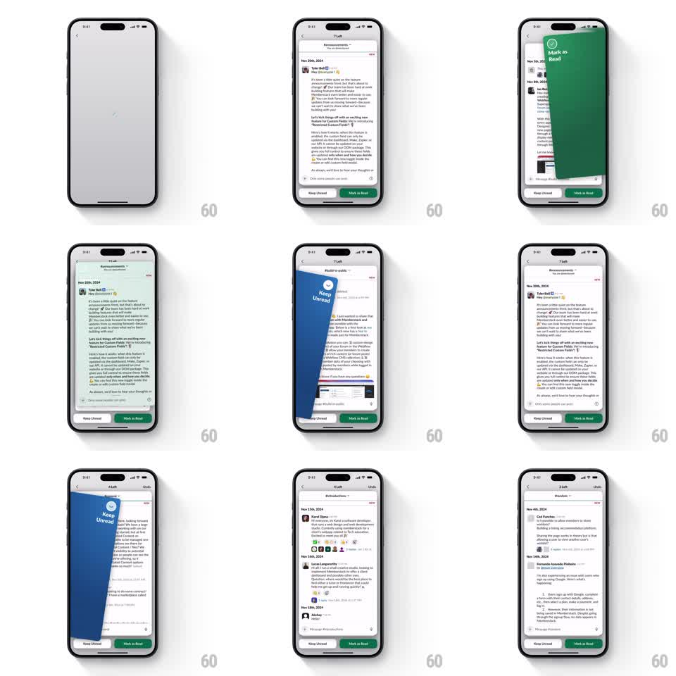

Media
Frame-by-frame

Rebuild this interaction 1:1: Slack's unread triage - full-screen message cards you fling right to Mark as Read or left to Keep Unread, the stack behind sliding up as the counter ticks down.

Rebuild this interaction 1:1: Slack's unread triage - full-screen message cards you fling right to Mark as Read or left to Keep Unread, the stack behind sliding up as the counter ticks down. ## Integration Integration: stack-agnostic spec - springs given as stiffness/damping, timed motions as duration + curve; map every value to your framework and animation library of choice. ## Scene A stack of full-screen message cards (channel name, "N Left" counter + Undo at top, full message body, Keep Unread and Mark as Read buttons at the bottom). The next card peeks behind the top one. ## Motion spec Pattern: swipe-to-dismiss card stack, gesture-driven. - Drag the top card: it follows the finger with rotation proportional to x-offset (~1deg per 24px), and a stamp fades in - green "Mark as Read" check when dragged right, blue "Keep Unread" when dragged left (alpha ramps over the first 120px). - Release past the threshold (~35% of width): the card flings off in that direction with its current velocity + gravity, rotating further as it leaves. - Release before threshold: card springs back to center (~350/22), stamp fading out. - The next card scales 0.95 -> 1 and slides up into place (spring ~300/20) as the dismissed card exits; the counter decrements when the exit starts. - The bottom buttons trigger the same flings (taps animate as a medium-velocity throw) so gesture and button paths never diverge. - Undo in the header recalls the last card: it slides back in from its exit side and the counter restores. ## Calibration - The stamp appears under the card's rotation, not over it... visually it rides on the card as a stamped badge, tilting with it. - Fling velocity is inherited from the gesture; a canned exit speed on a fast flick feels disconnected. ## Reduced motion Cards slide off without rotation (200ms); stamps crossfade. ## Don't miss - The counter and Undo are part of the card flow - the counter ticks on exit, not on release, so rapid swipes stay truthful. - The peeking card behind must move up in the same gesture that dismisses the top one.